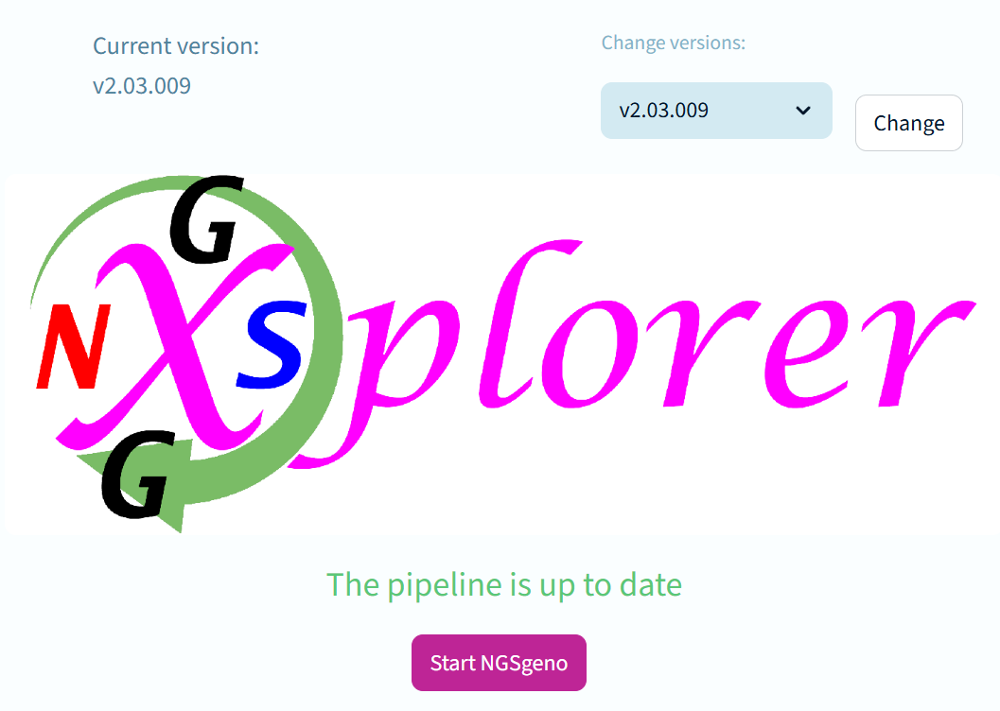

NGSG Version Select allows the user to check for new pipeline updates and choose the version they wish to run.

Make sure that you have the Ethernet cable plugged in before starting!
When you run this, it will look for new versions and pull them down to the workstation computer.
You can then choose which version you wish to use and launch it directly from within the application.